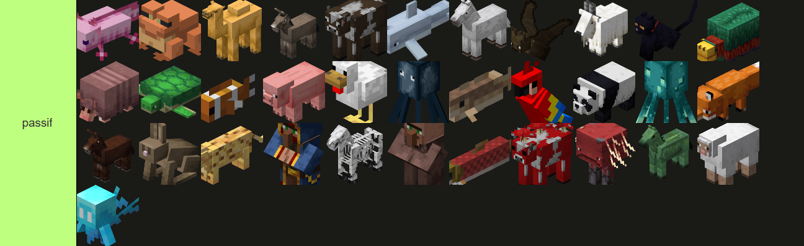
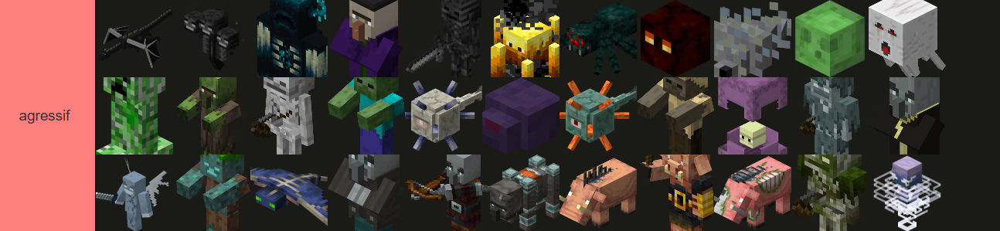
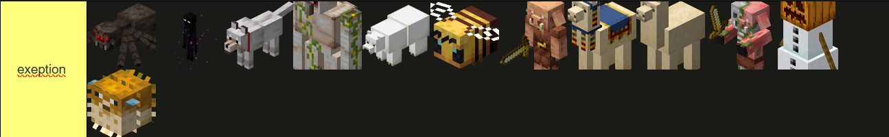

Les Différents types de Mobs:
1. Les Mobs "Passifs":
Ce sont des entités qui ne sont pas dangereuses et qui, pour certaines, peuvent vous aider à atteindre un objectif
Par exemple:
- Les villageois qui vendent des ressources pouvant être bénéfiques en fonction de la situation,on ne les trouvent que dans les villages qui sont des structures déjà générée
- Les moutons qui nous fournissent de la laine afin de crafter des choses utiles comme des lits ou des tableaux ;on ne les trouvent que dans l'Overworld
- Les vaches qui peuvent fournir de la nourritures avec leur viande ou encore fournir du lait et comme les moutons et les villlageois on les trouvent que dans l'Overworld
Il y a aussi d'autres mobs passifs comme les poules, les cochons, les lapins, etc.
Ces mobs sont généralement inoffensifs et peuvent être apprivoisés ou élevés.

2. Les Mobs "Agressifs":
Ce type de Mobs est nuisible pour le joueur car ils sont la pour ruiner son aventure en tentant de le tuer
Par exemple:
- Le Warden qui est le gardien , des cités anciennes; il fait aussi partis des mobs les plus dangereux du jeu, il se situe dans l'Overworld
- Le Wither Squelette, qui se situe dans Le Nether ,est un Mobs agressif même s'il faut l'invoquer pour le confronter
- L'Ender Dragon , le boss de fin de minecraft, est quand à lui le Mob le plus difficile à affronter de Minecraft et se situe dans L'End

3. Les Exeptions :
Cependant , il existe des Mobs qui font partis des deux catégories en fonctions de la situation:
Par exemple:
- Le Golem ,protecteur des villageois, il est passif en général mais peut devenir agressif si on le tape ou si l'on tape un villageois
- L'Enderman est en tant normal passif mais si on le regarde dans les yeux il devient agressif
- L'Araignée peut nous fournir des fils pour créer des arcs; elle est passive le jour et agressive la nuit
